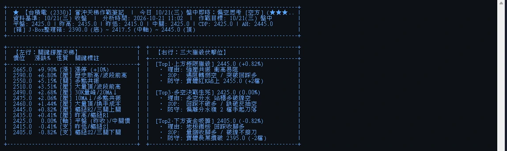
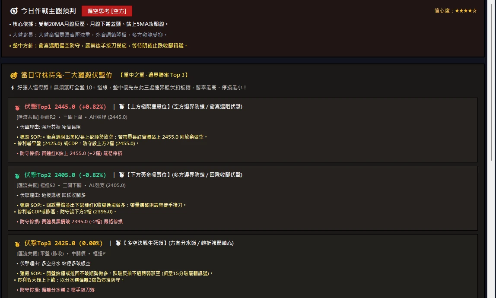

參 ・ 目前實用情況
今天早上，
它真的跑了一遍。
這一頁不講願景，只記錄 2026-10-21 這一天實際發生的事：引擎在什麼時間、對哪幾檔標的、算出了什麼，以及我怎麼驗證它算得對。所有截圖與數字都是當天盤中直接擷取，沒有後製。
驗證時間軸 ・ 2026-10-21（三）
從開程式到截完圖，三分鐘。
執行引擎：台積電 2330
抓取日 K、30 分 K、5 分 K 與盤中即時價，產出 19 階天梯、三大伏擊位、三個劇本。耗時 4.8 秒。
執行引擎：華通 2313
20 階天梯。耗時 1.6 秒（名稱對照庫命中，不需額外查詢）。
執行引擎：台指期 TXF
由期交所即時報價取得盤中價，17 階天梯。耗時 1.9 秒。
輸出 9 張高解析撐壓圖
三檔標的 × 三個週期，直接由引擎的繪圖函式輸出，就是桌面版右側那張圖。
啟動桌面版，程式化操作並截圖
依序載入三檔標的、切換三個週期與四個分頁，擷取 10 張畫面，供「作品」頁的導覽使用。
CDP 五價公式重算
用引擎輸出的昨高、昨低、昨收，手動重算五價，與引擎結果逐一比對。三檔全部一致（見右表）。
公式重算驗證
CDP = (H + L + 2C) ÷ 4，其餘四價由 CDP 與昨日振幅推得。
| 台積電 2330 | 華通 2313 | 台指期 TXF | |
|---|---|---|---|
| 昨高 / 昨低 / 昨收 | 2435 / 2415 / 2420 | 266 / 243.5 / 243.5 | 47450 / 47085 / 47179 |
| AH | 2442.5 | 271.62 | 47588.2 |
| NH | 2430 | 254.75 | 47361.5 |
| CDP | 2422.5 | 249.12 | 47223.2 |
| NL | 2410 | 232.25 | 46996.5 |
| AL | 2402.5 | 226.62 | 46858.2 |
| 與引擎輸出比對 | ✓ 一致 | ✓ 一致 | ✓ 一致 |
天梯上顯示的價位會再對齊到跳動檔位（例如 2313 的 CDP 249.12 掛在 249.0 那一階），所以天梯數字與原始五價會差半檔以內。
今天三檔的結論
| 標的 | 主觀預判 | Top1 獵殺 | Top3 分水嶺 | Top2 吸籌 |
|---|---|---|---|---|
| 台積電 | 偏空思考 ★★★★★ | 2440 | 2420 | 2400 |
| 華通 | 偏多思考 ★★★★☆ | 249.0 | 245.0 | 240.5 |
| 台指期 | 偏空思考 ★★★★★ | 47603 | 47102 | 46447 |
真實輸出
引擎印出來的作戰筆記，一字不改。
左邊是桌面版「手作作戰筆記」分頁的實拍：雙欄排版，左行天梯、右行伏擊位。下面三份是引擎實際輸出的敘事段落，打字機效果播放中，點一下可以直接看完。


備註：截圖與數據分別在 11:00 與 11:03 擷取，盤中價格持續變動，所以畫面上的平盤、昨高等數值與本頁表格可能相差一檔，屬正常現象。
每天怎麼用
盤前十分鐘的固定流程。
開程式，輸入代號
自選名單裡的標的一檔一檔跑，或直接按台指期。每檔兩到五秒。
讀決策彩帶與預判
平盤昨高昨低、J-Box、均線預警、CDP 五價，加上今天偏多還是偏空思考。
抄下三個伏擊位
一鍵複製作戰筆記貼到手機。三個點、三個劇本，這就是今天唯一允許出手的地方。
開盤，只做一件事
看開高、開平還是開低，拆對的錦囊，照著進場停損目標執行。沒到位置，不動。
誠實地說
目前的限制
證交所、期交所與 Yahoo 的公開介面在盤中有數秒到數分鐘的延遲，適合盤前規劃與盤中參考，不適合毫秒級的下單決策。
它告訴你哪裡「最可能攤牌」，不告訴你會往哪邊走。所以劇本一定配停損。
目前累積的是每日的實算與人工比對，還沒有足夠的交易日數做統計上的勝率結論。這一頁寫的就是現在的真實進度。
接下來
下一步
每天盤後自動存下三大伏擊位與當天實際高低，統計「觸及率」與「劇本命中率」。
用歷史日 K 與分 K 回放，看過去三個月如果照劇本執行會發生什麼。
收盤後自動產出「今天哪個劇本成立、伏擊位有沒有被碰到」的一頁覆盤。